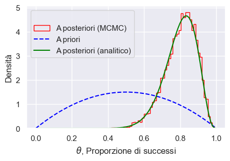

Markov Chain Monte Carlo per l’inferenza bayesiana
Contents
29. Markov Chain Monte Carlo per l’inferenza bayesiana#
Anziché scrivere il nostro campionatore utilizzando le funzioni di scipy.stats, come abbiamo abbiamo fatto nel capitolo precedente, è possibile fare ricorso ai linguaggi di programmazione probabilistici (PPL). Questi strumenti consentono agli utenti di formulare i modelli bayesiani utilizzando il codice del PPL per poi eseguire l’inferenza bayesiana in modo abbastanza automatizzato. In breve, i PPL aiutano gli utenti a concentrarsi maggiormente sulla costruzione di modelli e meno sui dettagli matematici e computazionali. La disponibilità di tali strumenti ha contribuito ad aumentare la popolarità e l’utilità dei metodi bayesiani negli ultimi decenni.
In questo capitolo introdurremo PyMC, un pacchetto Python per la modellazione statistica bayesiana. In precedenza abbiamo esaminato l’algoritmo Metropolis che consente di generare campioni da distribuzioni di probabilità basati sulla costruzione di una catena di Markov avente come distribuzione di equilibrio (o stazionaria) la distribuzione desiderata. Benché l’algoritmo Metropolis possa essere utilizzato per risolvere problemi più complessi di quello dell’esempio che abbiamo discusso, un suo limite risiede nel fatto che è poco efficiente – ovvero, nel caso di modelli complessi, richiede molto tempo per raggiungere una distribuzione stazionaria (ovvero, una distribuzione di probabilità che si mantiene costante all’evolversi nel tempo della catena di Markov). Sono stati messi a punto algoritmi Monte Carlo a catena di Markov (MCMC) che massimizzano l’efficienza nella velocità di esecuzione, come ad esempio, il campionatore No-U-Turn (NUTS), gli algoritmi Metropolis-Hastings, Gibbs Sampler e Hamiltonian Monte Carlo, e questi Universal Inference Engines (incluso l’algoritmo Metropolis) sono implementati in vari framework per la programmazione probabilistica (PP). PyMC e Stan [CGH+17] sono i due PPL più popolari. Con l’aiuto del framework PyMC è possibile definire modelli complessi, anche con molte migliaia di parametri, mediante una sintassi leggibile e intuitiva. In questo capitolo useremo PyMC per eseguire l’inferenza su una e su due proporzioni binomiali con Markov Chain Monte Carlo.
29.1. Il presidente Trump e l’idrossiclorochina#
Per fare un esempio concreto, consideriamo un set di dati reali. Cito dal Washington Post del 7 aprile 2020:
One of the most bizarre and disturbing aspects of President Trump’s nightly press briefings on the coronavirus pandemic is when he turns into a drug salesman. Like a cable TV pitchman hawking ‘male enhancement’ pills, Trump regularly extols the virtues of taking hydroxychloroquine, a drug used to treat malaria and lupus, as a potential ‘game changer’ that just might cure Covid-19.
Esaminiamo le evidenze a supporto dell’ipotesi che l’idrossiclorochina possa essere utile per la cura del Covid-19, ovvero le evidenze che erano disponibili nel momento in cui il Donald Trump ha fatto le affermazioni riportate sopra (in seguito, quest’idea è stata screditata). Tali evidenze sono fornite da uno studio di Gautret et al. [GLP+20]. Il disegno sperimentale di Gautret et al. [GLP+20] comprende, tra le altre cose, il confronto tra una condizione sperimentale e una condizione di controllo. Il confronto importante è tra la proporzione di paziente positivi al virus SARS-CoV-2 nel gruppo sperimentale (a cui è stata somministrata l’idrossiclorochina; 6 su 14) e la proporzione di paziente positivi nel gruppo di controllo (a cui non è stata somministrata l’idrossiclorochina; ovvero 14 su 16). Obiettivo di questo capitolo è mostrare come si possa fare inferenza sui dati di Gautret et al. [GLP+20] usando PyMC. Per semplicità, iniziamo considerando solo il gruppo di controllo.
29.2. Una proporzione#
Sulla base di ciò che è stato detto nel Distribuzioni coniugate, sappiamo che, quando i dati sono rappresentati da una proporzione \(\theta\), e quando utilizziamo una distribuzione a priori Beta per \(\theta\), la distribuzione a posteriori di \(\theta\) è specificata dallo schema beta-binomiale. Se scegliamo, ad esempio, una \(Beta(2, 2)\) quale distribuzione a priori per \(\theta\), il modello diventa:
dove la prima riga definisce la funzione di verosimiglianza e la seconda riga definisce la distribuzione a priori.
Per essere chiari, in questo caso particolare non è necessario utilizzare MCMC per stimare il posteriore poiché esiste già una soluzione analitica in forma chiusa. Tuttavia, la maggior parte dei modelli di inferenza bayesiana non ammette una soluzione in forma chiusa per il posteriore e quindi è necessario utilizzare MCMC. In questo esempio, applichiamo MCMC a un caso di cui “conosciamo già la risposta”, in modo da poter confrontare i risultati di una soluzione in forma chiusa e quella calcolata per approssimazione numerica.
29.3. Dedurre una proporzione binomiale con PyMC#
Ora eseguiremo la stessa analisi che abbiamo svolto in precedenza utilizzando invece il metodo numerico Markov Chain Monte Carlo. Suppoaniamo di avere già installato PyMC. Una volta installato, dobbiamo successivamente importare le librerie necessarie, che includono Matplotlib, Numpy, Scipy, Arviz e lo stesso PyMC.
import arviz as az
import matplotlib.pyplot as plt
import seaborn as sns
import numpy as np
import pandas as pd
import pymc as pm
from scipy.stats import beta
from scipy.constants import golden
# PyMC generates a FutureWarning we don't need to deal with yet
import warnings
warnings.filterwarnings("ignore", category=FutureWarning)
print(f"Running on PyMC v{pm.__version__}")
Running on PyMC v5.0.2
%matplotlib inline
SEED = 123456
rng = np.random.default_rng(SEED)
sns.set_theme()
sns.set_palette("colorblind")
plt.rc('figure', figsize=(5.0, 5.0/golden))
Vediamo ora come specificare il modello beta-binomiale mediante PyMC. Per svolgere l’analisi mediante PyMC è necessario prima specificare la struttura del modello bayesiano e poi eseguire il campionamento dalla distribuzione a posteriori. Esaminiamo questi due passaggi per l’esempio presente.
29.4. Dati#
I dati sono i seguenti.
ntrials = 16
y = 14
29.5. Distribuzione a priori#
Useremo una distribuzione Beta per rappresentare tutti possibili valori della probabilità di successo, che chiameremo \(\theta\). La distribuzione Beta è controllata da due parametri, \(\alpha\) e \(\beta\)
Ora definiamo una distribuzione Beta a priori e il modello di probabilità Binomiale. Questi sono i parametri della distribuzione Beta.
alpha_prior = 2
beta_prior = 2
29.5.1. Specificare il modello#
Per specificare il modello con PyMC si usa context with di Python. Ciò consente di assegnare tutti i parametri, gli argomenti e i valori iniziali a un’istanza pymc.Model (che denominiamo bb_model).
bb_model = pm.Model()
with bb_model:
# Prior
theta = pm.Beta("theta", alpha=alpha_prior, beta=beta_prior)
# Likelihood
obs = pm.Binomial("obs", p=theta, n=ntrials, observed=y)
La prima linea di codice
bb_model = pm.Model()
crea un nuovo oggetto di classe Model che è un contenitore per le variabili casuali del modello. Dopo l’istanziazione del modello, la successiva specificazione delle componenti del modello viene eseguita all’interno di un’istruzione with:.
Questo crea un context manager, con il nostro bb_model come contesto, che include tutte le istruzioni fino alla fine del blocco indentato. Ciò significa che tutti gli oggetti PyMC introdotti nel blocco di codice indentato sotto l’istruzione with: vengono aggiunti al modello. In assenza di questo idioma del context manager, saremmo costretti ad associare manualmente ciascuna delle variabili a bb_model.
Con la chiamata del costruttore pm.Beta si crea una variabile casuale da usare come distribuzione a priori. Il primo argomento è sempre il nome della variabile casuale, che dovrebbe corrispondere al nome della variabile Python assegnata, poiché a volte viene utilizzato per recuperare la variabile dal modello per riassumere l’output. I restanti argomenti richiesti per un oggetto stocastico sono i parametri, in questo caso alpha e beta, a cui assegniamo i valori degli iperparametri del modello. Nel caso presente, usiamo i valori alpha_prior e beta_prior come parametri della distribuzione Beta a priori.
La riga finale del modello definisce obs, la distribuzione campionaria della variabile di esito nel set di dati. Questo è un caso speciale di variabile stocastica chiamata observed stochastic, la quale rappresenta la verosimiglianza dei dati del modello. Tale variabile stocastica è identica alle altre variabili stocastiche, tranne per l’argomento obs, il quale indica che i valori per questa variabile sono stati osservati e non devono essere modificati dal modello. I dati possono essere passati sotto forma di oggetto ndarray o DataFrame. Nel caso presente, per la funzione di verosimiglianza Binomiale specificando il parametro p=theta, il numero di prove n=ntrials e il numero di successi observed=y.
Si noti che, a differenza delle distribuzioni a priori del modello, i parametri per la distribuzione Beta di obs non sono valori fissi, ma piuttosto corrispondono all’oggetto stocastico theta. Questo crea una relazione genitore-figlio tra la verosimiglianza e questa variabile.
29.5.2. Campionamento#
Eseguiamo il campionamento MCMC usando l’algoritmo di default (NUTS) e salviamo i risultati nell’oggetto idata.
with bb_model:
step = pm.NUTS()
idata = pm.sample(2000, tune=1000, step=step, chains=4)
Multiprocess sampling (4 chains in 4 jobs)
NUTS: [theta]
Sampling 4 chains for 1_000 tune and 2_000 draw iterations (4_000 + 8_000 draws total) took 11 seconds.
La funzione sample esegue il metod0 step assegnati (o passati) ad essa per il numero specificato di iterazioni e restituisce un oggetto InferenceData contenente i campioni raccolti, insieme ad altri attributi utili come le statistiche dell’esecuzione del campionamento e una copia dei dati osservati. Si noti che sample genera una serie di catene parallele, a seconda del numero di core di calcolo presenti sulla macchina.
Nota
InferenceData è un formato di dati specificamente progettato per le analisi bayesiane MCMC. Lo scopo principale dell’oggetto InferenceData è fornire un modo conveniente per archiviare e manipolare le informazioni generate durante un flusso di lavoro bayesiano, inclusi campioni dalle distribuzioni a posteriori, a priori, distribuzioni predittive a posteriori, distribuzioni predittive a priori e altre informazioni e diagnostiche generate durante il campionamento.
Avendo assunto una distribuzione a priori per il parametro \(\theta\), l’algoritmo procede in maniera ciclica, correggendo la distribuzione a priori di \(\theta\) condizionandola ai valori già generati. Dopo un certo numero di cicli, necessari per portare l’algoritmo a convergenza, i valori estratti possono essere assunti come campionati dalla distribuzione a posteriori di \(\theta\).
Al crescere del numero di passi della catena, la distribuzione di target viene sempre meglio approssimata. All’inizio del campionamento, però, la distribuzione può essere significativamente lontana da quella stazionaria, e ci vuole un certo tempo prima di raggiungere la distribuzione stazionaria di equilibrio, detto, appunto, periodo di burn-in. I campioni provenienti da tale parte iniziale della catena vanno tipicamente scartati perché possono non rappresentare accuratamente la distribuzione a posteriori.
Il tempo di campionamento dipende dalla velocità del computer a disposizione.
idata
-
<xarray.Dataset> Dimensions: (chain: 4, draw: 2000) Coordinates: * chain (chain) int64 0 1 2 3 * draw (draw) int64 0 1 2 3 4 5 6 7 ... 1993 1994 1995 1996 1997 1998 1999 Data variables: theta (chain, draw) float64 0.8981 0.8001 0.9044 ... 0.7918 0.7878 0.7461 Attributes: created_at: 2023-01-21T18:30:00.876843 arviz_version: 0.14.0 inference_library: pymc inference_library_version: 5.0.2 sampling_time: 10.784893274307251 tuning_steps: 1000 -
<xarray.Dataset> Dimensions: (chain: 4, draw: 2000) Coordinates: * chain (chain) int64 0 1 2 3 * draw (draw) int64 0 1 2 3 4 5 ... 1995 1996 1997 1998 1999 Data variables: (12/17) index_in_trajectory (chain, draw) int64 1 2 1 -2 -1 -1 ... -3 -3 3 1 1 1 max_energy_error (chain, draw) float64 -0.3681 -0.5685 ... 0.07904 step_size_bar (chain, draw) float64 1.327 1.327 1.327 ... 1.25 1.25 process_time_diff (chain, draw) float64 0.000187 0.000359 ... 0.00025 reached_max_treedepth (chain, draw) bool False False False ... False False energy (chain, draw) float64 5.48 4.668 4.445 ... 3.44 3.596 ... ... smallest_eigval (chain, draw) float64 nan nan nan nan ... nan nan nan acceptance_rate (chain, draw) float64 1.0 0.8718 ... 0.9986 0.924 energy_error (chain, draw) float64 -0.3681 -0.5685 ... 0.07904 tree_depth (chain, draw) int64 1 2 2 2 1 1 1 1 ... 2 2 2 2 1 2 1 perf_counter_start (chain, draw) float64 5.953e+04 ... 5.953e+04 largest_eigval (chain, draw) float64 nan nan nan nan ... nan nan nan Attributes: created_at: 2023-01-21T18:30:00.890038 arviz_version: 0.14.0 inference_library: pymc inference_library_version: 5.0.2 sampling_time: 10.784893274307251 tuning_steps: 1000 -
<xarray.Dataset> Dimensions: (obs_dim_0: 1) Coordinates: * obs_dim_0 (obs_dim_0) int64 0 Data variables: obs (obs_dim_0) int64 14 Attributes: created_at: 2023-01-21T18:30:00.894296 arviz_version: 0.14.0 inference_library: pymc inference_library_version: 5.0.2
I vari attributi dell’oggetto InferenceData possono essere estratti come nel caso di un dict contenente coppie composte da una chiave e un valore separati tra loro dal simbolo dei due punti. In questo caso le chiavi sono i nomi delle variabili e i valori sono dei numpy.arrays. Ad esempio, possiamo recuperare la traccia di campionamento dalla variabile latente theta nel modo seguente.
idata.posterior["theta"]
<xarray.DataArray 'theta' (chain: 4, draw: 2000)>
array([[0.89806715, 0.80010488, 0.90443545, ..., 0.69147409, 0.74335245,
0.846897 ],
[0.75646454, 0.69832838, 0.63614101, ..., 0.85349308, 0.89606496,
0.87960012],
[0.89805447, 0.86445438, 0.78598787, ..., 0.70127472, 0.78403542,
0.78198067],
[0.8957788 , 0.96511865, 0.91697507, ..., 0.79179303, 0.78777362,
0.74607793]])
Coordinates:
* chain (chain) int64 0 1 2 3
* draw (draw) int64 0 1 2 3 4 5 6 7 ... 1993 1994 1995 1996 1997 1998 1999Si noti che l’oggetto ritornato è un array
idata.posterior["theta"].shape
(4, 2000)
di dimensioni 4 \(\times\) 2000 (sul mio computer). Per visualizzare il primi 10 valori della prima catena, ad esempio, usiamo:
idata.posterior["theta"][0, 1:10]
<xarray.DataArray 'theta' (draw: 9)>
array([0.80010488, 0.90443545, 0.72562925, 0.61545138, 0.76350227,
0.78438645, 0.78438645, 0.70729393, 0.70729393])
Coordinates:
chain int64 0
* draw (draw) int64 1 2 3 4 5 6 7 8 9Se volessimo utilizzare l’algoritmo di campionamento Metropolis invece di NUTS (che è stato assegnato di default), possiamo specificare questo come argomento step per sample.
with bb_model:
# Instantiate sampler
step = pm.Metropolis()
# Draw 2000 posterior samples
metropolis_idata = pm.sample(2000, step=step)
Multiprocess sampling (4 chains in 4 jobs)
Metropolis: [theta]
Sampling 4 chains for 1_000 tune and 2_000 draw iterations (4_000 + 8_000 draws total) took 10 seconds.
29.5.3. Analisi a posteriori#
Esaminiamo l’accettanza.
az.plot_posterior(
idata,
group="sample_stats",
var_names="acceptance_rate",
hdi_prob="hide",
kind="hist",
)
<AxesSubplot: title={'center': 'acceptance_rate'}>

Estraiamo le stime a posteriori di \(\theta\) da idata.
posterior = az.extract(idata)
Le stime a posteriori di \(\theta\) sono accessibili nel modo seguente.
posterior["theta"]
<xarray.DataArray 'theta' (sample: 8000)>
array([0.89806715, 0.80010488, 0.90443545, ..., 0.79179303, 0.78777362,
0.74607793])
Coordinates:
* sample (sample) object MultiIndex
* chain (sample) int64 0 0 0 0 0 0 0 0 0 0 0 0 ... 3 3 3 3 3 3 3 3 3 3 3 3
* draw (sample) int64 0 1 2 3 4 5 6 ... 1993 1994 1995 1996 1997 1998 1999Dato che posterior['theta'] è una lista, possiamo facilmente calcolare la media a posteriori
posterior["theta"].mean()
<xarray.DataArray 'theta' ()> array(0.80104485)
oppure la mediana a posteriori di \(\theta\)
posterior["theta"].median()
<xarray.DataArray 'theta' ()> array(0.8124649)
La deviazione standard della stima a posteriori è
np.std(posterior["theta"])
<xarray.DataArray 'theta' ()> array(0.0879165)
Per semplicità, salvo le stime a posteriori di \(\theta\) in un array.
p_post = posterior["theta"]
Possiamo ora fare inferenza usando i risultati ottenuti. Un sommario della distribuzione a posteriori si ottiene con il metodo az.summary().
az.summary(idata, hdi_prob=0.95, round_to=3)
| mean | sd | hdi_2.5% | hdi_97.5% | mcse_mean | mcse_sd | ess_bulk | ess_tail | r_hat | |
|---|---|---|---|---|---|---|---|---|---|
| theta | 0.801 | 0.088 | 0.63 | 0.956 | 0.001 | 0.001 | 3403.119 | 4032.079 | 1.0 |
Si ottiene così l’intervallo di credibilità a più alta densità a posteriori (HPD) al 95%. Questo intervallo ci informa sul fatto che, a posteriori, possiamo essere certi al 95%, che il vero valore del parametro \(\theta\) sia contenuto nell’intervallo [0.625, 0.95].
L’output grafico dell’analisi è riportato nel grafico seguente.
# Posterior: Beta(alpha + y, beta + n - y)
alpha_post = alpha_prior + y
beta_post = beta_prior + ntrials - y
plt.hist(
p_post,
bins=50,
histtype="step",
density=True,
label="A posteriori (MCMC)",
color="red",
)
# Plot the analytic prior and posterior beta distributions
x = np.linspace(0, 1, 100)
plt.plot(x, beta.pdf(x, alpha_prior, beta_prior), "--", label="A priori", color="blue")
plt.plot(
x,
beta.pdf(x, alpha_post, beta_post),
label="A posteriori (analitico)",
color="green",
)
# Update the graph labels
plt.legend(title=" ", loc="best")
plt.xlabel("$\\theta$, Proporzione di successi")
plt.ylabel("Densità")
Text(0, 0.5, 'Densità')

In questo esempio, con 8,000 campioni, la convergenza dell’algoritmo NUTS è estremamente buona. L’istogramma segue da vicino la distribuzione a posteriori calcolata analiticamente, come da previsione.
Un tracciato della catena di Markov illustra questa esplorazione rappresentando il valore \(\theta\) sulle ordinate e l’indice progressivo di in ogni iterazione sull’ascissa. Il trace plot è estremamente utile per valutare la convergenza di un algoritmo MCMC e se è necessario escludere un periodo di campioni iniziali (noto come burn-in). Per produrre la traccia chiamiamo semplicemente az.plot_trace() con la variabile idata:
az.plot_trace(idata)
plt.show()

La traccia descrive il comportamento longitudinale delle catene di Markov. Possiamo usare il metodo az.plot_trace() per visualizzare sia la traccia sia una stima della densità del kernel (KDE) dell’istogramma delle stime a posteriori, ovvero, dei valori che le catene MCMC visitano lungo il loro percorso, ignorando l’ordine di queste visite. Da notare come la stima di KDE della convinzione a posteriori nella probabilità di efficacia dell’idrossiclorochina riflette sia la convinzione a priori di 𝜎=0.22 che i nostri dati con una correttezza campionaria di 𝜎=0.09. Inoltre possiamo vedere che la procedura di campionamento MCMC è “convergente alla distribuzione” poiché la serie di campionamento sembra stazionaria.
Svolgendo un’analisi bayesiana simile a questa, Gautret et al. [GLP+20] hanno trovato che gli intervalli di credibilità del gruppo di controllo e del gruppo sperimentale non si sovrappongono. Questo fatto viene interpretato dicendo che il parametro \(\theta\) è diverso nei due gruppi. Sulla base di queste evidenza, Gautret et al. [GLP+20] hanno concluso, con un grado di certezza soggettiva del 95%, che nel gruppo sperimentale vi è una probabilità più bassa di risultare positivi al SARS-CoV-2 rispetto al gruppo di controllo. In altri termini, l’analisi statistica condotta da Gautret et al. [GLP+20] suggerisce che l’idrossiclorochina è una terapia efficace per il Covid-19.
29.6. La critica di Hulme (2020)#
Un articolo pubblicato da Hulme et al. [HWD+20] si è posto il problema di rianalizzare i dati di Gautret et al. [GLP+20].1 Tra gli autori di questo articolo figura anche Eric-Jan Wagenmakers, uno psicologo molto conosciuto per i suoi contributi metodologici. Hulme et al. [HWD+20] osservano che, nelle loro analisi statistiche, Gautret et al. [GLP+20] hanno escluso alcuni dati. Nel gruppo sperimentale, infatti, vi erano alcuni pazienti i quali, anziché migliorare, sono in realtà peggiorati. L’analisi statistica di Gautret et al. [GLP+20] ha escluso i dati di questi pazienti. Se consideriamo tutti i pazienti — non solo quelli selezionati da Gautret et al. [GLP+20] — la situazione diventa la seguente:
gruppo sperimentale: 10 positivi su 18;
gruppo di controllo: 14 positivi su 16.
L’analisi dei dati proposta da @Hulme_2020 richiede l’uso di alcuni strumenti statistici che, in queste dispense, non verranno discussi. Ma possiamo giungere alle stesse conclusioni raggiunte da questi ricercatori anche usando le procedure statistiche descritte nel Paragrafo successivo.
29.7. Due proporzioni#
Svolgiamo ora l’analisi statistica considerando tutti i dati, come suggerito da @Hulme_2020. Per fare questo verrà creato un modello bayesiano per fare inferenza sulla differenza tra due proporzioni. Dopo avere generato le distribuzioni a posteriori per le proporzioni di “successi” nei due gruppi, calcoleremo la quantità
ovvero il rapporto tra gli Odds di positività tra i pazienti del gruppo di controllo e gli Odds di positività tra i pazienti del gruppo sperimentale. Se il valore dell’OR è uguale a 1, significa che l’Odds di positività nel gruppo di controllo è uguale all’Odds di positività nel gruppo sperimentale, cioè il fattore in esame (somministrazione dell’idrossiclorochina) è ininfluente sulla comparsa della malattia. L’inferenza statistica sull’efficacia dell’idrossiclorochina come terapia per il Covid-19 può dunque essere effettuata esaminando l’intervallo di credibilità al 95% per l’OR: se tale intervallo include il valore 1, allora non c’è evidenza che l’idrossiclorochina sia efficace come terapia per il Covid-19.
Nell’implementazione di questo modello, la quantità di interesse è l’odds ratio; tale quantità viene calcolata nel blocco generated quantities. Per i parametri \(\theta_1\) e \(\theta_2\) useremo delle distribuzioni a priori debolmente informative il cui scopo è la regolarizzazione dei dati.
Elenco i dati dei due gruppi.
# Define the data for proportion 1
y1 = 14
n1 = 16
# Define the data for proportion 2
y2 = 10
n2 = 18
Definisco il modello.
with pm.Model() as model:
# Define the priors for the two proportions
p1 = pm.Beta("p1", alpha=2, beta=2)
p2 = pm.Beta("p2", alpha=2, beta=2)
# Define the likelihood functions for the two proportions
likelihood1 = pm.Binomial("likelihood1", n=n1, p=p1, observed=y1)
likelihood2 = pm.Binomial("likelihood2", n=n2, p=p2, observed=y2)
# Define the difference of odds model
odds_ratio = pm.Deterministic("odds_ratio", (p1 / (1 - p1)) / (p2 / (1 - p2)))
Eseguo il campionamento MCMC.
with model:
trace = pm.sample(draws=2000, tune=1000)
Auto-assigning NUTS sampler...
Initializing NUTS using jitter+adapt_diag...
Multiprocess sampling (4 chains in 4 jobs)
NUTS: [p1, p2]
Sampling 4 chains for 1_000 tune and 2_000 draw iterations (4_000 + 8_000 draws total) took 11 seconds.
Esamino i risulati.
az.hdi(trace, hdi_prob=0.95)
<xarray.Dataset>
Dimensions: (hdi: 2)
Coordinates:
* hdi (hdi) <U6 'lower' 'higher'
Data variables:
p1 (hdi) float64 0.6314 0.9536
p2 (hdi) float64 0.3541 0.7492
odds_ratio (hdi) float64 0.4228 12.07L’intervallo di credibilità del 95% per l’OR include il valore di 1.0 (ovvero, il valore che indica che gli Odds di positività sono uguali nei due gruppi). In base agli standard correnti, un risultato di questo tipo non viene considerato come evidenza sufficiente per potere concludere che il parametro \(\theta\) assume un valore diverso nei due gruppi. In conclusione, se consideriamo tutti i dati, e non solo quelli selezionati da Gautret et al. [GLP+20], non vi sono evidenze sull’efficacia dell’idrossiclorochina come terapia per il Covid-19.
29.8. Commenti e considerazioni finali#
La ricerca di Gautret et al. [GLP+20] include altre informazioni e altre analisi statistiche che non sono state qui considerate. Tuttavia, la semplice analisi statistica che abbiamo qui descritto è stata in grado di replicare le conclusioni a cui sono giunti (per altra via) Hulme et al. [HWD+20].
29.9. Watermark#
%load_ext watermark
%watermark -n -u -v -iv -w
Last updated: Sat Jan 21 2023
Python implementation: CPython
Python version : 3.10.9
IPython version : 8.7.0
arviz : 0.14.0
numpy : 1.24.1
pandas : 1.5.3
matplotlib: 3.6.3
pymc : 5.0.2
seaborn : 0.12.2
Watermark: 2.3.1
- 1
Si veda https://osf.io/5dgmx/.